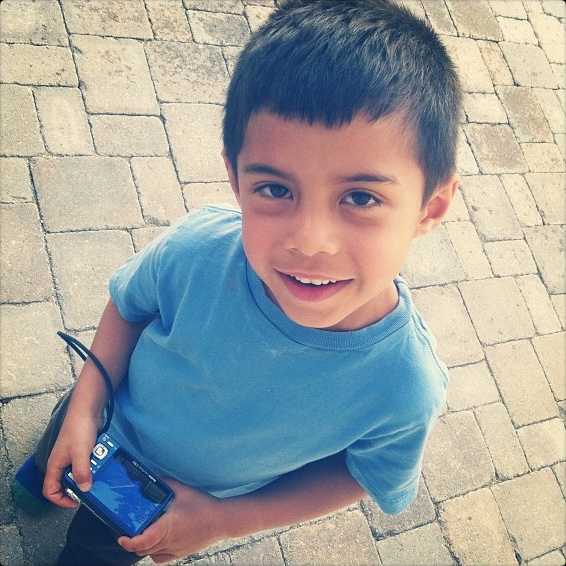

### About Me
Hi, I'm Max! I am a 19 year old student from Colorado. I went to Regis Jesuit High School and I'm currently at the University of Notre Dame, where I'm studying computer science and math. Unsurprisingly, I'm a big fan of computers. I'm hoping to use this website to share projects and thoughts, because there are so many interesting things that I'd like to do and always a surprising number of dilemmas to be worked out in words.
Some more interests of mine include running, hiking, playing piano, speedcubing, thrifting, skiing, and taking photos. I also enjoy reading and writing (journaling), but often only in times when I'm able to force myself to. So many of the things I do are like giving a cat a bath. I've never owned a cat, but I've heard that once they're finally wet they no longer hate the water.

^this is a photo of me in the spring of 2012. The camera in my hand is the same camera that took most of the photos on this website!